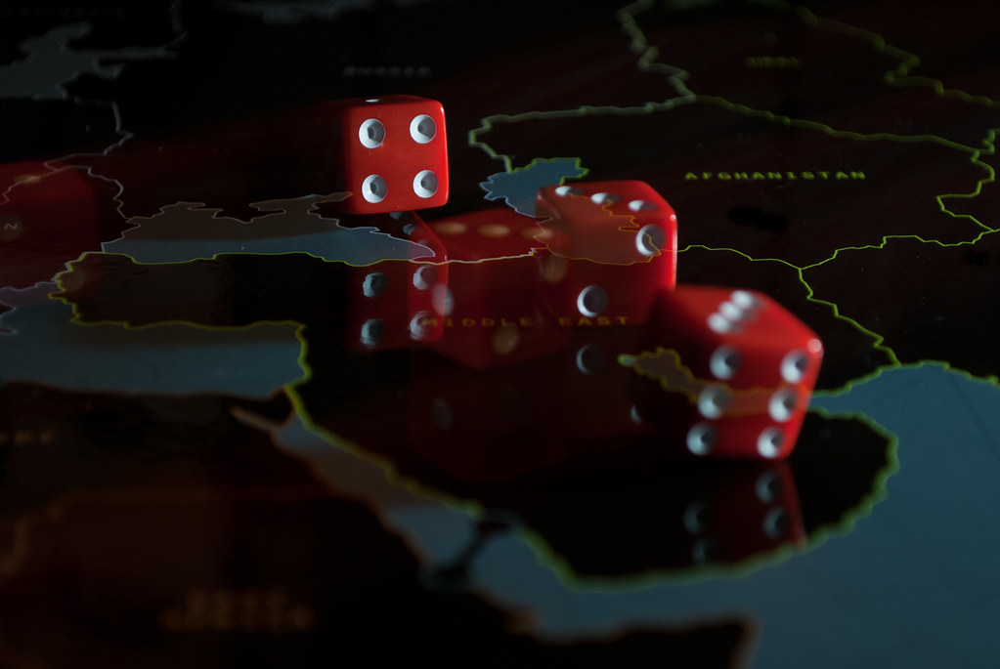
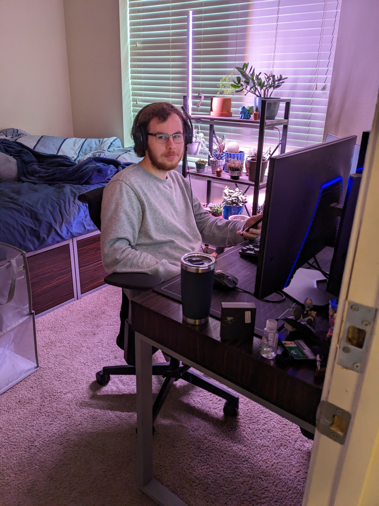

Welcome to our organization's website! We are thrilled to have you here and hope that you find everything you need. Our website is designed to provide you with comprehensive information about our organization, including our mission, goals, and the services we offer. Whether you are a current member, interested in becoming a member, or simply looking to learn more about us, our website is the perfect place to start. You can explore our site to find out about our upcoming events, recent news, and ways to get involved. We are dedicated to creating a welcoming and inclusive community, and we hope that our website reflects this commitment. Thank you for visiting our site, and we look forward to connecting with you!
Board Game Night is an organization founded by Phoenix Chassin in 2023. Phoenix is a passionate board game enthusiast who has always loved the idea of bringing people together for an evening of friendly competition and fun. In pursuit of his vision, he founded a club called Board Game Night. This club brings together people from all walks of life, who share a common interest in board games. Members gather regularly to play a wide range of games, from classic favorites like Monopoly and Scrabble to newer games like Settlers of Catan and Ticket to Ride.
